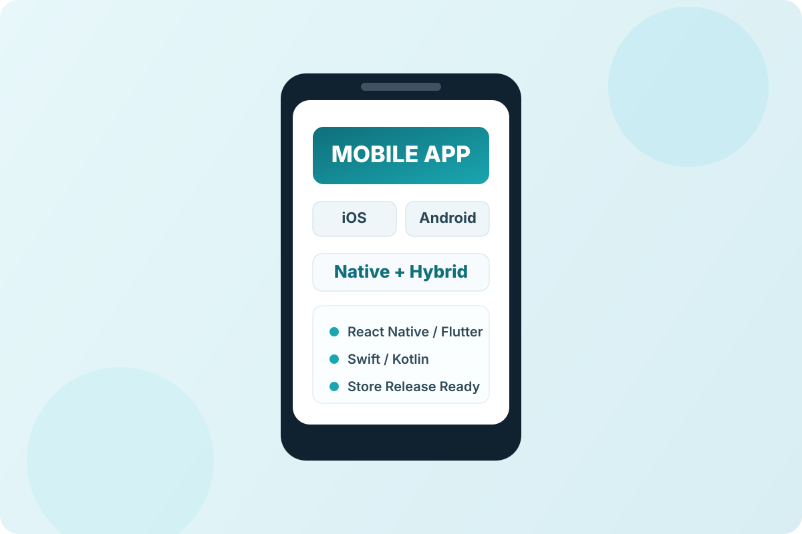

Native ve Hybrid Mimari
Swift/Kotlin ve Flutter/React Native yaklaşımlarıyla doğru teknoloji seçimi yapılır.
iOS ve Android için native/hybrid mobil uygulamaları ürün odaklı şekilde geliştiriyoruz.

Native ya da hybrid mimariyi hedefinize göre belirliyor, yayın süreci ve canlı izlemeyi birlikte planlıyoruz.
Mobil ürünlerde başarı, sadece uygulamayı yayınlamakla değil; performans, kullanıcı deneyimi ve sürüm disiplinini birlikte yönetmekle gelir.
Mobil geliştirme hizmetimizde ilk adım, ürünün gerçek kullanım senaryosunu netleştirmektir. Kullanıcı uygulamayı hangi sıklıkla açacak, hangi akışta terk edecek, hangi adımda ödeme ya da form dönüşümü bekleniyor gibi kritik noktaları tanımlıyoruz. Bu sayede tasarım ve teknik kararlar estetik yerine iş hedefi odaklı alınır.
Teknoloji tarafında native ya da hybrid kararı rastgele verilmez. Ekip kabiliyeti, hedef pazar, bakım maliyeti, yayın hızı ve uzun vadeli ölçeklenme kriterlerine göre en doğru mimariyi seçiyoruz. Uygulama içi analitik, push altyapısı, hata izleme ve API güvenliği başlangıçtan itibaren planlandığı için canlıya geçiş sonrası sürpriz maliyetler azalır.
Yayın süreci de hizmetin bir parçasıdır. App Store ve Google Play süreçleri, sürüm notları, onay döngüsü ve ilk versiyon sonrası iyileştirme planı ekiplerle birlikte yürütülür. Sonuç olarak yalnızca "app yaptık" değil; kullanıcı tutan, ölçülebilir ve sürdürülebilir bir mobil ürün ortaya çıkar.
Uygulamanın sadece kodunu değil, yayın sürecini ve canlı operasyonunu da birlikte tasarlıyoruz.
Swift/Kotlin ve Flutter/React Native yaklaşımlarıyla doğru teknoloji seçimi yapılır.
Push, analitik, kimlik doğrulama ve API bağlantıları ürün hedeflerine göre kurgulanır.
Store süreçleri, versiyonlama ve canlı sonrası bakım planı disiplinli şekilde yürütülür.
Mobil ürünlerde hız kadar sürdürülebilirlik kritik olduğu için sprint ve ölçüm odaklı ilerliyoruz.
Hedef kitle, kritik senaryolar ve platform önceliği belirlenir.
Ekran akışları, performans beklentisi ve teknik sınırlar netleştirilir.
Her sprint sonunda test edilebilir build ve geri bildirim döngüsü sunulur.
Release checklist, mağaza onay süreci ve ilk sürüm takibi yönetilir.
Bu alan mobil geliştirme talepleri içindir. Formu doldurabilir ya da telefon ve e-posta üzerinden doğrudan bize ulaşabilirsiniz.
Hızlı iletişim: +90 507 421 66 88 · info@softenwise.com